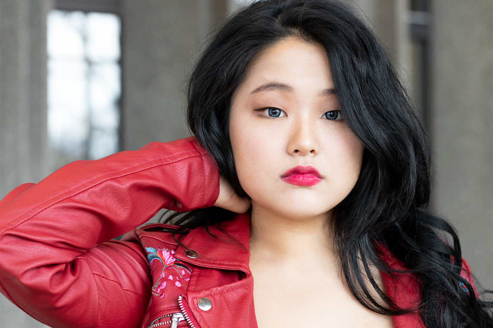

Badass portraits are essential for any entrepreneur or working professional in today’s digital world. Whether for your website, Linkedin profile or any sort of bio, your headshot is your audiences’ first glance of who you are! “Headshots” tend to have a negative connotation, with boring business attire and a fake smile - but it doesn’t have to be that way! The new era of social media and authentic brands gives us room to play and add tons of personality to your portraits.
If you’ve already booked your portrait session, know that prepping for your day will be essential to getting the look you want and showing your best self. Here’s some of my top tips to prepare for your perfect portrait session.
As a general rule, don’t wear something that will fade in the background or too many crazy patterns. Stripes are usually a no go, but otherwise definitely feel free to experiment with a bit of colour and texture. The key here is to put some thought into what you’re wearing including all of your jewelry and accessories. If you’re looking for more specific advice, always feel free to ask! Your photographer is the expert at creating visuals so we definitely know what would look best for the style you’re going for.
No need for a fresh haircut or crazy makeup! Keep it simple. Style your hair as you normally would, taking a bit of extra care to tame frizz (looking at you too guys!). For makeup, keep the colours neutral unless you specifically want a pop of colour. It’s helpful to have a slightly heavier hand than usual since makeup will get washed out by studio lights a little. Pay extra attention to your foundation. You want your skin to be as smooth as possible, but don’t worry about smothering acne or marks - that’s what Photoshop is for. Bringing makeup with you for touch-ups is also a good idea.
This one I cannot stress enough. Having wrinkle-free clothing makes such a difference in your portraits and keeps you looking sharp.
Layering your clothing or bringing an extra cardigan or jacket is an easy way to get some variety in your portraits. Depending on the style you’re going for, a prop or two that represents your personality, business or hobby you love could be a great addition to your portraits or even just a way to bring some fun into your session. The more options the better, you never know what photos might turn out best.
With wine, coffee and tea in the studio, make sure you take some breaks. I’m always open to chat during the session, whether it’s about your images or anything else. Having a good time is all part of the experience and remember, you this time out of your regular day! This time is for you, so be sure to enjoy it. Plus, being relaxed makes for better portraits and authentic smiles ;)